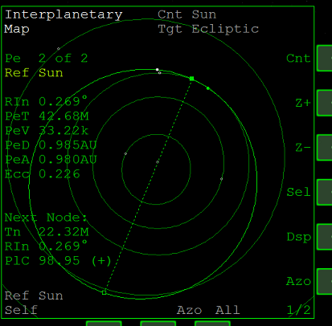
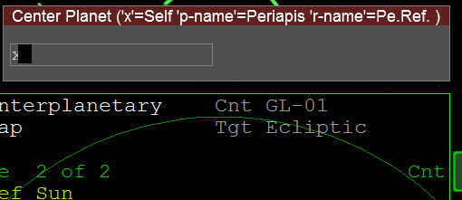
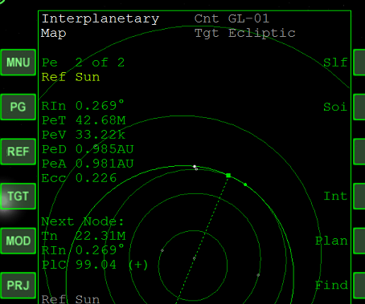
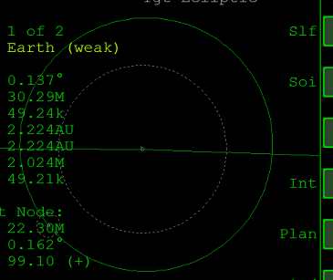
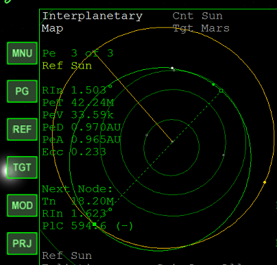
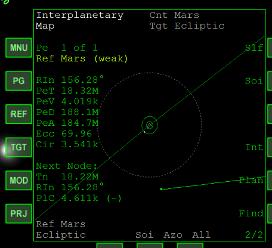

IMFDのMap Programは、惑星や宇宙船の位置と軌道を表示できるツールです。
OrbiterのMODのなかで、もっとも軌道予測の精度が高いことで知られています。
Program MenuからMapをクリック。
Map Programの主要な機能について解説する。
MFD右側のDsp(Display)をクリックすると、すべての惑星の軌道が表示される。

Z+ or Z-で拡大・縮小する。
Azo(Auto zoom)で自機を中心とした一定範囲を表示する。
Cnt(Center)をクリックして宇宙船や星の名前を入力すると、それらを中心にして表示する。
xと入力すると自機が中心になる。

目標の天体に最接近したときの近点(Pe)を中心にすることもできる。
例えば地球から月に移動中なら、p-moonと入力する。
Selをクリックすると、左側に表示されるPe / Apを切り替える。
地球→月のフライトだと、近地点、近月点などを切り替える。
MFD左側のPGをクリックすると、2ページ目に移る。
1ページと2ページで使用できる機能が異なる。

Slf(Self)で自機の軌道を表示する・非表示にする。
PlanでTarget Interceptなどのフライトプランを表示する。
Soi(Sphere of Influence)をクリックすると、惑星・衛星の重力圏（影響圏）が点線で表示される。

MFD左側のTGTをクリックして、惑星・宇宙船の名前を入力するとターゲットを指定する。
右側のFindで選択可能なターゲットを順に切り替える。

Intをクリックすると、Intercept Mode（インターセプト・モード）になる。
インターセプトする時点での自機とターゲットの位置を点線で表示する。
MFD左側のREFをクリックして惑星・宇宙船の名前を入力すると、軌道表示の基準が変わる。
例えば、Marsと入力すると、火星から見た自機の軌道を表示する。

RefとCntを目標の惑星にすると、TransXのView:Encounterと同じように使うことができる。
明るい緑の線で表示されている自機の軌道を見ながら、手動で軌道を調整する。
IMFDのほかの機能（Target Interceptなど）は別の計算方法を用いているため、精度があまり高くない。
Target Interceptで作成した軌道をMap Programで検証することで、正確に目的地に到達することができる。